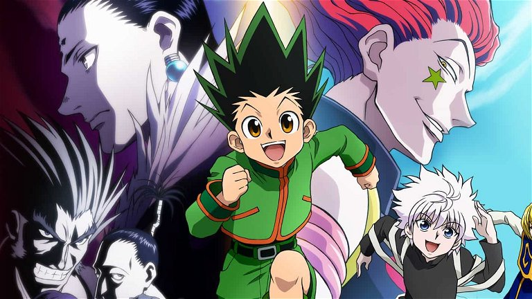
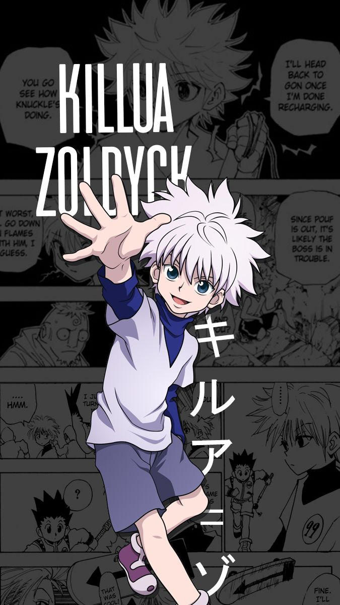
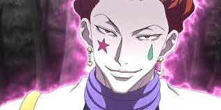

¡Bienvenido al mundo de Hunter x Hunter!
Gon, un joven que vive en Isla Ballena, sueña con convertirse en un Cazador como lo era su padre, el cual se fue cuando Gon todavía era un niño. Acompaña a Gon y sus amigos en sus emocionantes aventuras.
Gon Freecss es el protagonista de la serie. Es un joven optimista y valiente que sueña con convertirse en un Cazador como su padre. Su búsqueda lo lleva a aventuras emocionantes y peligrosas.

Killua es el mejor amigo de Gon. Proviene de la famosa familia de asesinos Zoldyck. Aunque inicialmente frío y calculador, Killua se convierte en un aliado leal y valiente en las misiones de Gon.
Hisoka es un personaje intrigante. Es un Cazador y un luchador extremadamente poderoso. Su interés peculiar se centra en posibles adversarios como Gon y Killua.
Para disfrutar de Hunter X Hunter, pulsa aquí y abrirás CrunchyRoll.
Vamos de regreso